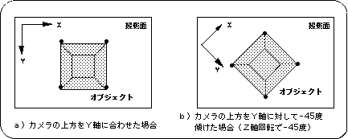

Return to previous page | Return to menu | Go to next page
6-2. Camera settings using “slLookAt”
SGL supports the library function “slLookAt” for easy camera setup.
- [void slLookAt (FIXED * camera, FIXED * target, ANGLE angz);]
- This function controls the camera in 3D graphics (which direction is in view).
Three parameters are held: the camera XYZ coordinate values (three-dimensional array), the target XYZ coordinate values that determine the line-of-sight direction (three-dimensional array), and the camera rotation angle relative to the line-of-sight direction.
When used with the functions “slPerspective” and “slWindow”, the drawing area of 3D graphics can be completely determined.
Figure 6-1 Camera image model

Here are the details about the angle. To put it simply, the angle is the angle at which the camera is held with respect to the line of sight. By changing the angle value, you can draw different images for the same line of sight.
Figure 6-2 Difference in video by angle

Note) The camera position, target coordinates, and object state are the same for both a) and b).
Return to previous page | Return to menu | Go to next page